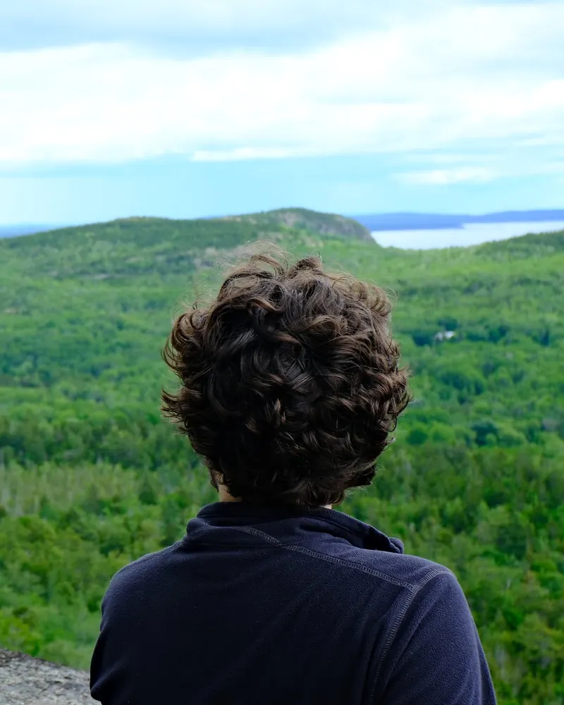
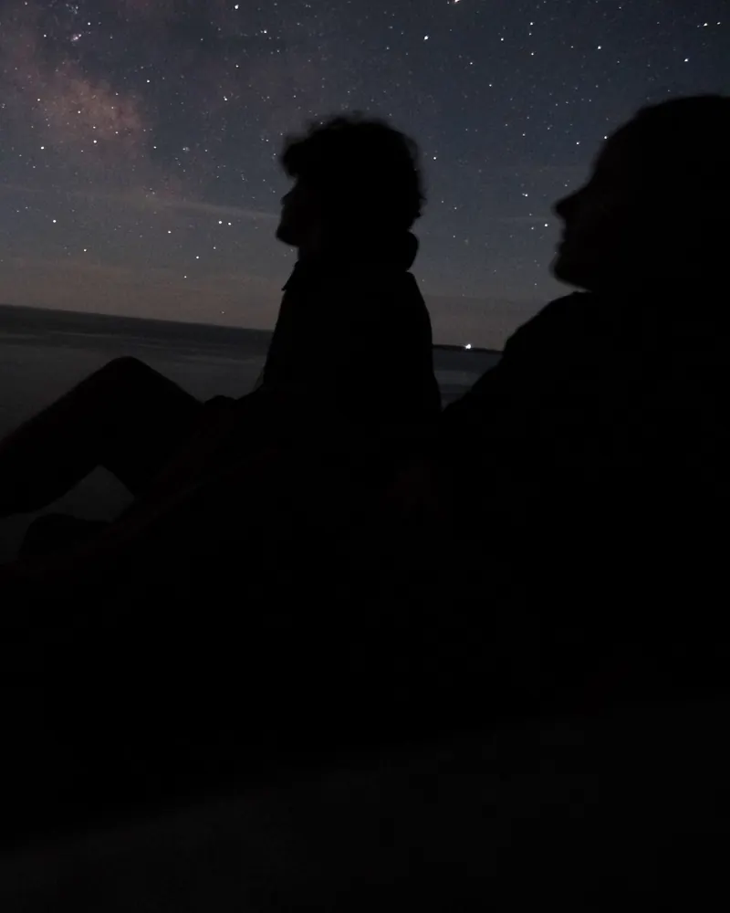
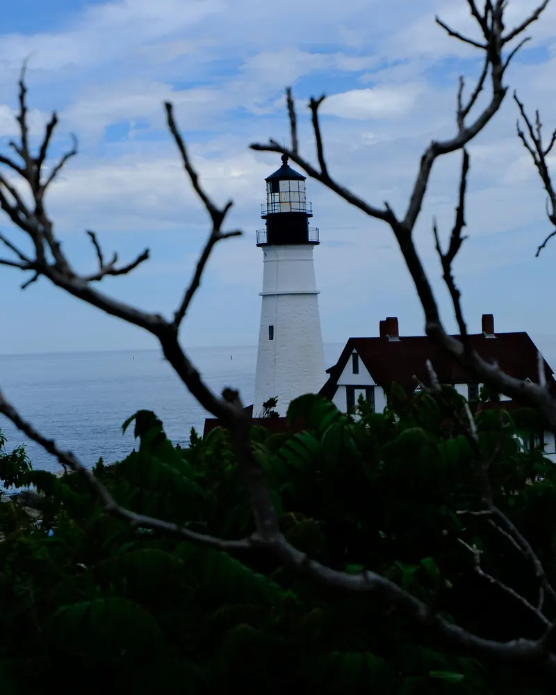

Fig. 01CHARGER flight model 28 components at their true stations
Line
Shaded
Spec
Resolve 000%
MSN 01 / Union College Rocket Team / 2026
First place, Deployable Sensor Payload.
Battle of the Rockets 2026. I founded the team, ran it as captain and chief engineer, and led the design and build of the airframe and the deployable payload.
Thermal test bench, SunThruThe company needed to rank glazing samples by insulating performance and had no way to measure it. I built the whole bench. It reads heat flow through the sample directly and will not accept a result until readings hold steady for a full hour.RoleDesign, electronics, firmware, safety systemsResultBuilt for roughly a quarter of a comparable commercial quote
Experience, newest first. B.S. Mechanical Engineering, Union College, 2026.
to
Engineering internSunThru, Schenectady, NY
SunThru is a Union College spin-out making silica aerogel inserts that give double pane windows triple pane performance. I built and tested the company's first full in-house prototype units and led validation on thermal performance and optical clarity. I supported bring-up of a PLC automation system, and led sourcing for a replacement production blower on a one week deadline, catching a power spec mismatch against the site's supply before anyone ordered.
to
Founder and presidentUnion College Rocket Team
Started the team from nothing and built it to competition standard. Led the twelve person competition team as captain, trained new members through build labs and owned safety compliance for high power launches. Grew the budget by seven hundred percent by writing funding proposals. The team won first place at Battle of the Rockets 2026 and was chartered as a section of the National Association of Rocketry.
to
FounderModuFly
Co-founded a startup around a modular interlocking rocket system for STEM education. Raised $70,000 in seed funding, starting with a $10,000 prize at the SparkLabs competition and then $60,000 from private investors. Led R&D and production, and ran rocketry workshops for more than twenty high school students.
Design engineer and materials internTASECS, Ankara, Turkey
Aerospace thermal management. Designed high efficiency HVAC valve components, ran stress and fatigue analysis supporting two national fighter and jet trainer programs, and selected aerospace grade materials for printed prototypes.
1stBattle of the Rockets 2026, Deployable Sensor Payload
700%Rocket team budget growth, from proposals I wrote
$70,000Seed funding raised for ModuFly
100%Robo-Catcher feed indexing on competition day
Systems
Design and CAD
SolidWorks, expert / GD&T to ASME Y14.5 / Tolerance stack-up / DFM and DFA / Shop drawings for quoting / AutoCAD / CATIA
Controls
PLC ladder logic / Control panel wiring / 4-20 mA instrumentation / Pressure transducers / Thermocouples / PID control
Electronics and firmware
C++ / ESP32 / Teensy / Embedded data acquisition / Closed loop control / USB HID / Hall effect and heat flux sensors
Analysis
FEA / CFD / MATLAB / Heat transfer / HVAC load calculation / Stress and fatigue
I grew up in Izmir and came to New York for the degree. Outside of engineering I fly, make short films and shoot photography.
Piloting
Licensed ultralight pilot, certified through the Turkish civil aviation authority. The rudder pedals came out of the same interest.
Filmmaking
Three short films screened at the Robert College Film Festival in 2022. One, a solo project, was nominated for cinematography, editing and sound design.
Photography
An ongoing thing rather than a project.
Cooking
Most days, mostly the food I grew up with in Izmir.
Travelling
Whenever there is room to. The camping and the vlogging fit in here.

Frame 01

Frame 02

Frame 03
05 Websites / Design and development
Like what you see? Let's build yours.
I build websites around your work, your business, and the things that make them worth exploring. This page is the sample: written by hand, no framework, with a live 3D model you can take apart.